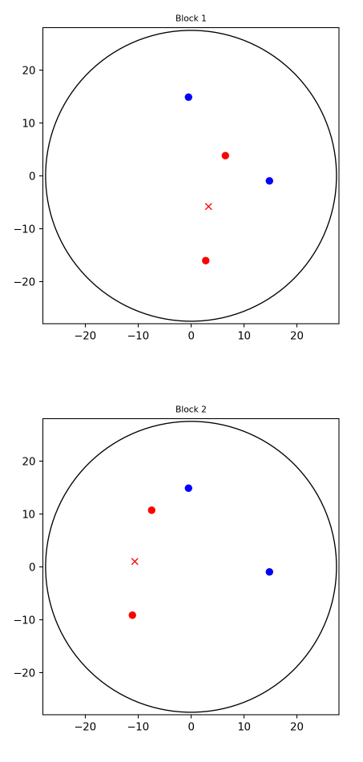
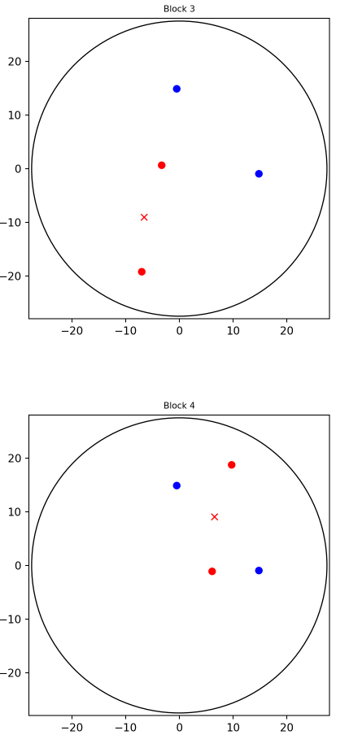
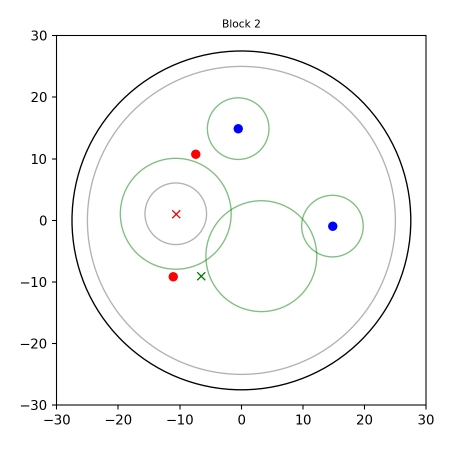

2 Randomisation script
2.1 Set up
## Warning: package 'reticulate' was built under R version 4.0.2## Warning: package 'here' was built under R version 4.0.2## here() starts at /Users/makova/Desktop/landmark_boundary/Full-analysis-scriptsThis script is written in Python
#import Python packages
import json
import random
import math
import matplotlib.pyplot as plt
from matplotlib.backends.backend_pdf import PdfPages#function definitions
#generates random location within a circle
def arenaRand(circle_r):
# center of the circle (x, y)
circle_x = 0
circle_y = 0
# random angle
alpha = 2 * math.pi * random.random()
# random radius
r = circle_r * math.sqrt(random.random())
# calculating coordinates
x = r * math.cos(alpha) + circle_x
y = r * math.sin(alpha) + circle_y
return x, y
#generates random locations within a round band
def ringRand(circle_r1, circle_r2, circle_x = 0, circle_y = 0):
# center of the circle (x, y)
# random angle
alpha = 2 * math.pi * random.random()
# random radius
r = random.uniform(circle_r1, circle_r2)
# calculating coordinates
x = r * math.cos(alpha) + circle_x
y = r * math.sin(alpha) + circle_y
return x, y
#calculates distance between two objects
def distance(landmark, obj):
d = math.sqrt(((landmark[0]-obj[0])**2)+((landmark[2]-obj[2])**2))
return d2.2 Assigning dependency and generating objects’ locations
# center of the arena
origin = [0,0,0]
# list for storing new IDs
codes =[]
# number of first participant
part = 1
for i in range(1): #number adjusted for the target amount of participants
#objList
# list containing the names of the objects, used in instructions for each trial
objName = ["none","flower","slime","lamp","partyhat"]
#learnOrder
# order in which the objects' appeared during learning phase (each object twice)
obj = [1,2,3,4]
order = random.sample(obj, k=len(obj))
learnOrder = [0] + order + order
#feedbackOrder
# order in which the objects' appeared during testing phase (each object 16 times)
# via shuffling the obj list order resulting in each object appearing the same amount of times before further trials
feedbackOrder = [0]
while len(feedbackOrder) < 65:
if len(feedbackOrder) == 1:
one = random.sample(obj, k=len(obj))
if one[0] != learnOrder[-1]:
feedbackOrder = feedbackOrder + one
else:
feedbackOrder = [0]
else:
next = random.sample(obj, k=len(obj))
if next[0] != feedbackOrder[-1]:
feedbackOrder = feedbackOrder + next
#landmarkPos
# generating first position of landmark
landmarkPos = [[0,0,0]]
x, z = ringRand(2,20)
y = -2.4
loc = [x, y, z]
landmarkPos.append(loc)
#familiarisePropLoc
# generating 10 locations in which a prob object would appear during familiarization phase
familiarisePropLoc = [[0,0,0]]
i = 0
while len(familiarisePropLoc) < 11:
x, z = arenaRand(22.5)
y = 0.25
loc = [x, y, z]
#making sure it doesnt land in the landmark position
if distance(loc, landmarkPos[1]) > 8 and distance(loc, familiarisePropLoc[i]) > 10:
familiarisePropLoc.append(loc)
i += 1
#objLoc
objLoc = []
#randomisation of objects as landmark-dependent vs boundary-dependent
# it shuffles the obj list and assigns the first two as a landmark-dependent and the last two as boundary-dependent objects
s = random.sample(obj, k=4)
landBound1 = s[0]
landBound2 = s[1]
bounBound1 = s[2]
bounBound2 = s[3]
#Object Locations in Block 1-4 & Landmark Locations in BLock 2-4
w=1
while len(objLoc) < 4:
#setting up objects' locations for Block 1
if len(objLoc) == 0:
objLocBlock = [None] * 5
objLocBlock[0] = [0,0,0]
y=0.7
while objLocBlock[bounBound1] == None:
x1, z1 = ringRand(circle_r1 = 14.5, circle_r2 = 19.5, circle_x = 0, circle_y = 0)
if distance([x1,y,z1],landmarkPos[1]) > 8:
objLocBlock[bounBound1] = [x1, y, z1]
while objLocBlock[bounBound2] == None:
x2, z2 = ringRand(circle_r1 = 14.5, circle_r2 = 19.5, circle_x = 0, circle_y = 0)
if distance([x2,y,z2],landmarkPos[1]) > 8 and distance([x2,y,z2],objLocBlock[bounBound1]) > 8:
objLocBlock[bounBound2] = [x2, y, z2]
while objLocBlock[landBound1] == None:
x3, z3 = ringRand(circle_r1 = 8, circle_r2 = 13, circle_x = landmarkPos[1][0], circle_y = landmarkPos[1][2])
if distance([x3,y,z3],objLocBlock[bounBound1]) > 8 and distance([x3,y,z3],objLocBlock[bounBound2]) > 8 and distance([x3,y,z3],origin) < 22.5:
objLocBlock[landBound1] = [x3, y, z3]
while objLocBlock[landBound2] == None:
x4, z4 = ringRand(circle_r1 = 8, circle_r2 = 13, circle_x = landmarkPos[1][0], circle_y = landmarkPos[1][2])
if distance([x4,y,z4],objLocBlock[bounBound1]) > 8 and distance([x4,y,z4],objLocBlock[bounBound2]) > 8 and distance([x4,y,z4],objLocBlock[landBound1]) > 8 and distance([x4,y,z4],origin) < 22.5:
objLocBlock[landBound2] = [x4, y, z4]
objLoc.append(objLocBlock)
g = 1
#setting up landmark & objects locations for block 2-4
else:
#landmark location
x, z = arenaRand(22.5)
y = -2.4
loc = [x, y, z]
i = 0
diff = []
for i in range(len(landmarkPos)):
#checking distance to other landmark previous locations
if distance(landmarkPos[i], loc) > 10:
i += 1
diff.append('True')
else:
i += 1
diff.append('False')
if 'False' not in diff:
print(diff)
#checking distance to boundary-dependent objects
if distance(loc, objLoc[0][bounBound1]) > 8 and distance(loc, objLoc[0][bounBound2]) > 8:
landmark = loc
i += 1
#location of boundary-dependent objs for this block
objLocBlock = [None] * 5
objLocBlock[0] = [0,0,0]
objLocBlock[bounBound1] = objLoc[0][bounBound1]
objLocBlock[bounBound2] = objLoc[0][bounBound2]
print('boundary-bound locations done')
#location of the landmark-dependent obj 1 for this block
x1 = objLoc[0][landBound1][0] + (landmark[0]-landmarkPos[1][0])
y1 = 0.7
z1 = objLoc[0][landBound1][2] + (landmark[2]-landmarkPos[1][2])
locObj1 = [x1, y1, z1]
#checking if it is inside the arena and correct distance from boundary-dependent objects
if distance(locObj1, origin) < 22.5 and distance(locObj1, objLoc[0][bounBound1]) > 5 and distance(locObj1, objLoc[0][bounBound2]) > 5:
print('inside arena obj1')
objLocBlock[landBound1] = locObj1
print('landmark-bound location 1 done')
#location of the landmark-dependent obj 2 for this block
x2 = objLoc[0][landBound2][0] + (landmark[0]-landmarkPos[1][0])
y2 = 0.7
z2 = objLoc[0][landBound2][2] + (landmark[2]-landmarkPos[1][2])
locObj2 = [x2, y2, z2]
#checking if it is inside the arena and correct distance from boundary-dependent objects
if distance(locObj2, origin) < 22.5 and distance(locObj2, objLoc[0][bounBound1]) > 5 and distance(locObj2, objLoc[0][bounBound2]) > 5:
objLocBlock[landBound2] = locObj2
print('inside arena obj2')
objLoc.append(objLocBlock)
landmarkPos.append(landmark)
print('landmark-bound location 2 done')
print(len(objLoc))
g += 1
else:
print('outside of arena obj2')
else:
print('outside of arena obj1')
else:
w += 1
if w < 5000:
objLoc = objLoc[0:g]
print('landmark not far away from other landmarks')
landmarkPos = landmarkPos[0:g+1]
print(w)
# if number of tries exceed 5000, object locations get reset and only landmark location for block 1 remains
else:
objLoc = []
landmarkPos = landmarkPos[0:2]
w = 0
#visualization of the generated locations for all 4 blocks
landmark_x = [landmarkPos[1][0], landmarkPos[2][0], landmarkPos[3][0], landmarkPos[4][0]]
landmark_y = [landmarkPos[1][2], landmarkPos[2][2], landmarkPos[3][2], landmarkPos[4][2]]
#generating a pdf holding the graphs to accompany every input data file
pp = PdfPages('input_figs_' + str(part) +'.pdf')
for i in range(4):
circle1 = plt.Circle((0,0), 27.5, color='black', fill=False)
fig, ax = plt.subplots()
plt.xlim(-28,28)
plt.ylim(-28,28)
ax.set_aspect(1)
ax.add_artist(circle1)
plt.plot(landmark_x[i], landmark_y[i], 'xr')
plt.plot(objLoc[i][bounBound1][0], objLoc[i][bounBound1][2], 'ob')
plt.plot(objLoc[i][bounBound2][0], objLoc[i][bounBound2][2], 'ob')
plt.plot(objLoc[i][landBound1][0], objLoc[i][landBound1][2], 'or')
plt.plot(objLoc[i][landBound2][0], objLoc[i][landBound2][2], 'or')
plt.title('Block ' + str(i+1), fontsize=8)
plt.savefig(pp, format='pdf')
plt.show()
i =+ 1
# creates the overall pdf file with all 4 plots
pp.close()
#coded ID
ID = random.randint(1000,9999)
none = ["none"]
ID = none + [str(ID)]
codes = codes + ID
#json file
json_data = {
"objName" : objName,
"learnOrder" : learnOrder,
"feedbackOrder" : feedbackOrder,
"landmarkPos":landmarkPos,
"familiarisePropLoc": familiarisePropLoc,
"objLoc1": objLoc[0],
"objLoc2": objLoc[1],
"objLoc3": objLoc[2],
"objLoc4": objLoc[3],
"IDnew": ID
}
json_dump = json.dumps(json_data)
json_input = json.loads(json_dump)
#saves the created json to the current folder
with open('psub'+str(part)+'_inputParam.json','w') as json_file:
json.dump(json_input, json_file)Block 1 - 4 Objects’ Locations
 
2.3 Visualisation of location restrictions
2.3.1 For stimulus objects
#location restrictions
i=2
circle1 = plt.Circle((0,0), 27.5, color='black', fill=False)
circle2 = plt.Circle((0,0), 19.5, color='blue', fill=False, alpha=0.6)
circle3 = plt.Circle((0,0), 14.5, color='blue', fill=False, alpha=0.6)
circle4 = plt.Circle((landmark_x[i], landmark_y[i]), 13, color='red', fill=False,alpha=0.6)
circle5 = plt.Circle((landmark_x[i], landmark_y[i]), 8, color='red', fill=False, alpha=0.6)
fig, ax = plt.subplots()
plt.xlim(-28,28)
plt.ylim(-28,28)
ax.set_aspect(1)
ax.add_artist(circle1)
ax.add_artist(circle2)
ax.add_artist(circle3)
ax.add_artist(circle4)
ax.add_artist(circle5)
plt.plot(landmark_x[i], landmark_y[i], 'xr')
plt.plot(objLoc[i][bounBound1][0], objLoc[i][bounBound1][2], 'ob')
plt.plot(objLoc[i][bounBound2][0], objLoc[i][bounBound2][2], 'ob')
plt.plot(objLoc[i][landBound1][0], objLoc[i][landBound1][2], 'or')
plt.plot(objLoc[i][landBound2][0], objLoc[i][landBound2][2], 'or')
plt.title('Block '+str(i+1), fontsize=8)
plt.show()Location Restrictions
Object’s location can be generated only inside the band surrounding its cue.

2.3.2 For landmark
#visualising restrictions for new landmark position in block 3
i=1
circle1 = plt.Circle((0,0), 27.5, color='black', fill=False) #arena
circle2 = plt.Circle((0,0), 25, color='black', fill=False, alpha=0.3) #where objects can be located
circle4 = plt.Circle((landmark_x[i], landmark_y[i]), 9, color='green', fill=False, alpha=0.5)
circle6 = plt.Circle((landmark_x[0], landmark_y[0]), 9, color='green', fill=False, alpha=0.5) #minimal change of landmark
circle5 = plt.Circle((landmark_x[i], landmark_y[i]), 5, color='black', fill=False, alpha=0.3) #minimal distance of objects from the landmark
circle10 = plt.Circle((objLoc[i][bounBound1][0], objLoc[i][bounBound1][2]), 5, color='green', fill=False, alpha=0.5) #landmark cannot be inside these circles in the next blocks
circle11 = plt.Circle((objLoc[i][bounBound2][0], objLoc[i][bounBound2][2]), 5, color='green', fill=False, alpha=0.5)
fig, ax = plt.subplots()
plt.xlim(-30,30)
plt.ylim(-30,30)
ax.set_aspect(1)
ax.add_artist(circle1)
ax.add_artist(circle2)
ax.add_artist(circle4)
ax.add_artist(circle5)
ax.add_artist(circle6)
ax.add_artist(circle10)
ax.add_artist(circle11)
plt.plot(landmark_x[i], landmark_y[i], 'xr')
plt.plot(landmark_x[2], landmark_y[2], 'xg')
plt.plot(objLoc[i][bounBound1][0], objLoc[i][bounBound1][2], 'ob')
plt.plot(objLoc[i][bounBound2][0], objLoc[i][bounBound2][2], 'ob')
plt.plot(objLoc[i][landBound1][0], objLoc[i][landBound1][2], 'or')
plt.plot(objLoc[i][landBound2][0], objLoc[i][landBound2][2], 'or')
plt.title('Block '+str(i+1), fontsize=8)
plt.show()Landmark Movement Restrictions
Red cross - current landmark location
Black circle - arena size
Big grey circle - area within which objects can be located
Small grey circle - area within which objects cannot be located due to landmark closeness
Green circles - area around current and present landmark location within which landmark can not appear in future blocks and around boundary-dependent objects within which landmark also cannot be located
Blue and red dots - objects’ locations
Green cross - landmark location in next block

2.4 Visualisation of Feedback Levels
#visualizing the feedback ratios
circle1 = plt.Circle((0,0), 25, color='black', fill=False, alpha=0.3)
circle2 = plt.Circle((0,0), 27.5, color='black', fill=False)
circle3 = plt.Circle((objLoc[1][bounBound1][0], objLoc[1][bounBound1][2]), 3, color='green', fill=False, alpha=0.6)
circle4 = plt.Circle((objLoc[1][bounBound1][0], objLoc[1][bounBound1][2]), 6, color='yellow', fill=False, alpha=0.6)
circle5 = plt.Circle((objLoc[1][bounBound1][0], objLoc[1][bounBound1][2]), 9, color='orange', fill=False, alpha=0.6)
circle6 = plt.Circle((objLoc[1][bounBound1][0], objLoc[1][bounBound1][2]), 12, color='red', fill=False, alpha=0.6)
fig, ax = plt.subplots()
plt.xlim(-28,28)
plt.ylim(-28,28)
ax.set_aspect(1)
ax.add_artist(circle1)
ax.add_artist(circle2)
ax.add_artist(circle3)
ax.add_artist(circle4)
ax.add_artist(circle5)
ax.add_artist(circle6)
plt.plot(landmark_x[i], landmark_y[i], 'xr')
plt.plot(objLoc[1][bounBound1][0], objLoc[1][bounBound1][2], 'ob')
plt.plot(objLoc[1][bounBound2][0], objLoc[1][bounBound2][2], 'ob')
plt.plot(objLoc[1][landBound1][0], objLoc[1][landBound1][2], 'or')
plt.plot(objLoc[1][landBound2][0], objLoc[1][landBound2][2], 'or')
plt.title('Block '+str(i+1), fontsize=8)
plt.show()Feedback Ratios